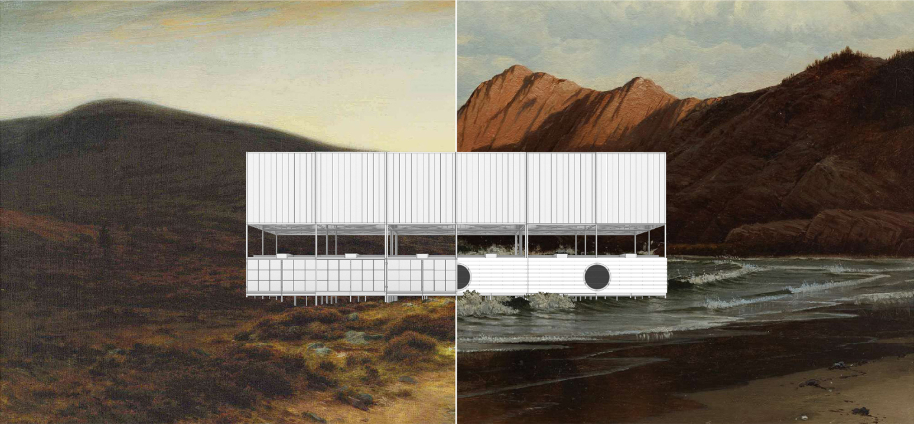
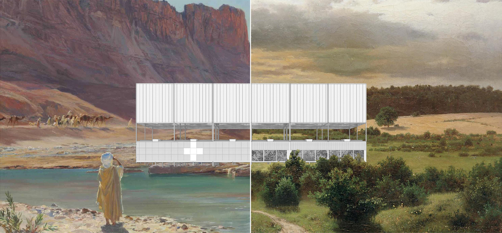
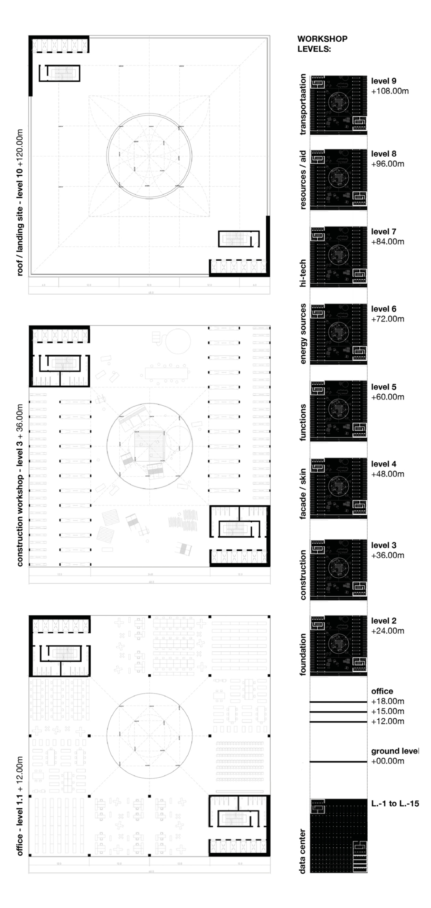
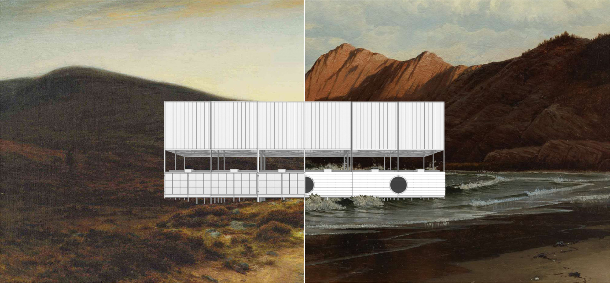
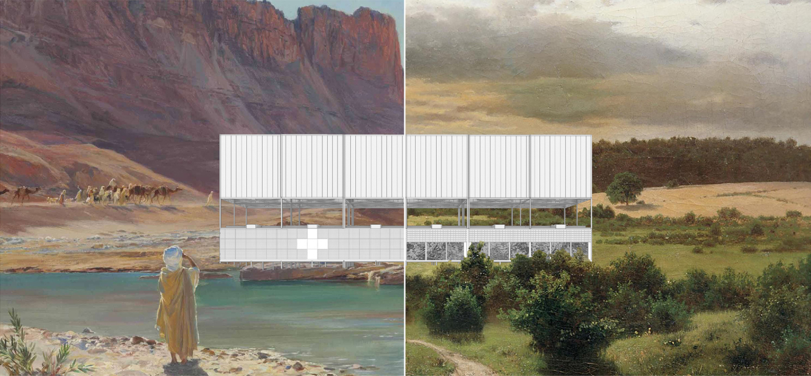
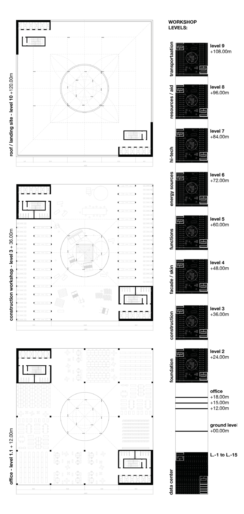

T H E P I L G R I M

Problem
Currently, there are over 700 million people in the world who are not able to write and read. Most of them are women. Almost three times as many do not have access to a stable education system. Without these basics, people are cut off from information, knowledge and truth. Without that they become more vulnerable on manipulation, social inequalities, exploitation, objectification or even slavery.
Solution
We believe that each of the above-mentioned problems can be solved in two ways: on an ad hoc basis - through
recovery policies and programs, and in the long term - through raising self-awareness and a sense of global
community by providing the necessary knowledge and tools to regions of the world that need support. This
bottom-up proposal also helps in tackling such problems as mas migration, climate change and economic crisis
after the pandemic.
The solution is simple - it is education.
Project
The project consists of three stages: the first is the production of specialised research and education units in assembly towers. The second is the transport of units using flying modules with an airship-based foot system to selected places on the globe where the teaching systems do not exist or are at a low level. The third stage is the creation of educational centres that give people access to knowledge, tools and technologies of the modern world. Giving them the opportunity to level the playing field.
Implementation
Knowledge bank - it is located in places separated from civilisation, stores knowledge in digital form in underground server rooms and produces flying modules in the assembly tower.
- Assembly tower - produces modules designed for specific tasks.
- Assembly - the vertical warehouse allows to store parts and build units in the form of a vertical production line. Each workshop level is prepared to install categorised parts of the module. Construction starts on the level +2 and ends on the rooftop.
- Landing site - rooftop of the tower is a place where modules are composed into a bigger package. After that they are picked up by drones which are responsible for delivering the data cloud to the final destination.
- Standard module -the carrier consists of three parts: The first is the functional zone, the second is the technical/communication and load-bearing zone. The type of foundation, thickness and material of the walls or ceiling are selected in accordance with the challenges of a given climate.
- Data cloud - selected places around the world generally need more than a classroom. Therefore, depending on the requirements, collections of modules will be sent to them. The whole thing will be powered by an unmanned system consisting of drones and balloons.
- Mission - modules are designed to serve in any climate and can expand into larger research centres, schools, field laboratories, aid centres, hospitals, greenhouses etc. Each of the new centres is equipped with a research core that allows to carry out measurements and reports of ecosystem parameters. Conclusion we believe that by educating people all over the world, we can deeply heal the red zone areas of the planet. Education and Science as a modern luxury commodity becomes accessible to all. It will significantly increase the environmental awareness but also will bring back the subjectivity of each individual and by that will open the door to a more democratic, sustainable and peaceful world.
 




